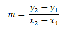
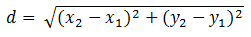
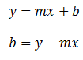
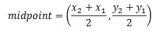

Line
A different Point class:
Previously you've created a class named Point, but there is actually already a Point class that is commonly used in Java.
import java.awt.Point;
Constructor
Point(int x, int y)
Notable Methods:
double getX()
double getY()
java.awt.Point is a little bit of a flawed class because it only deals with ints, meaning that we're out of luck if we want to created the point (1.5,3.8). Also, due to some previously created classes, the getX and getY methods both return doubles, even though we know that the instance fields are ints. When dealing with this Point class, casting will become your friend.
The Line class
Write a class named Line, which will represent the line that goes through two Points.
Instance Fields:
The only two instance fields that you should have are two Point objects (import
java.awt.Point;) that represent the two points used to define the object.
We haven't frequently had objects as instance fields, but just remember that a
Point is really just an x and a y, it's just going to take an extra getX() or
getY() call to access the information.
Constructor:
Line(Point p1, Point p2)
This constructor will assign the parameters to the instance fields.
Methods:
public double getSlope() - This method will calculate and return the slope of
the line.

public double getDistance() - This method will calculate and return the distance between the two instance fields using the distance formula.

public double getYIntercept() - This method will calculate and return the y-intercept of the line. In the equation y = mx+b, b is the y-intercept. Hint: this.getSlope() should help you get a value for m, and from there you may use either of the two Points for x and y.

public double getYFromX(int x) - This method will take in an x and return the value of y = mx+b. Hint: use this.getSlope() for m, and this.getYIntercept() for b.
public Point getMidPoint() - This method will calculate the midpoint of the two instance fields. Notice that this method returns a Point object, meaning you must first calculate the x and the y of the midpoint, and then construct a new Point with those values. Warning: You may get a double from this caluculation, but need an int for constructing the Point. You'll need to cast your values into ints before you create the Point (To be really close, use Math.round(int) to round the number before casting. Once this is done you may return the Point.

Note: The getMidPoint method is a good example of using objects to our advantage. Any method can only return ONE thing, and the getMidPoint method generates an x and a y. Luckily, since the Point class encapsulates an x and a y, you may return ONE object that has more than just one bit of data in it. If we did not have the Point class we may have had to break it into two methods: getMidPointX() and getMidPointY(). This is much less classy.
public static String formatPoint(Point p) - This method is a helper method, meaning it completes a task that you don't want to repeat in other parts of the code. The parameter is a Point object. Your job is to take the x and y out of it, cast them into ints, and then create and return a String of the form "( __ , __ )".
Note: This method is a little bit different than the rest of the methods. It has ABSOLUTELY NOTHING to do with the instance fields. You simply give it a Point and it returns a String. This method is only a tool, similar to Math.pow and Math.sqrt. For this reason it is going to be STATIC. Since it's a static method located in the Line class, you can always call it using Line.formatPoint(...). You do not have to create a new Line object to use this method.
Write a toString that creates and returns a String in the following form:
Point A: (6,30)
Point B: (15,55)
Distance: 26.5706605
Slope: 2.77777
Y-Intercept: 13.333333333
When x is 13, y is 49.4444444444
MidPoint: (11,43)
<------- This is rounded, you may also have (10,42) if you casted without
rounding.
In order to get this right, you must have three calls to Line.formatPoint, passing in a point and getting back a String that looks the way you want.
Write a runner for the Line class that asks the user for 4 ints, x1,y1,x2, and y2. One they're parsed into ints, construct two new Point objects and then use those to construct a new line object. Then print out the toString of that Line.